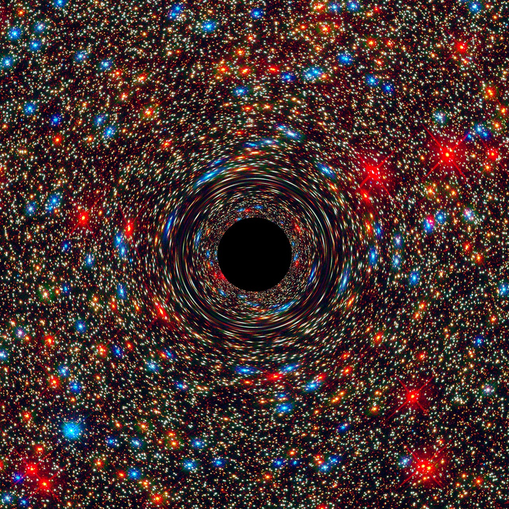
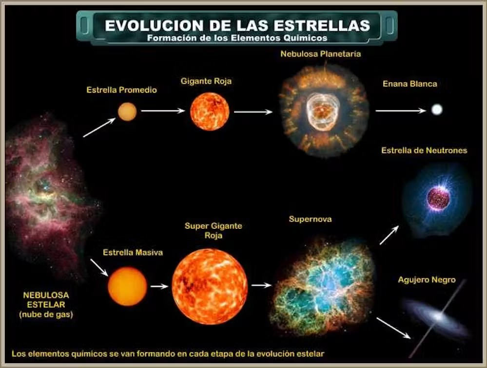
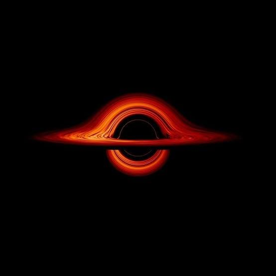
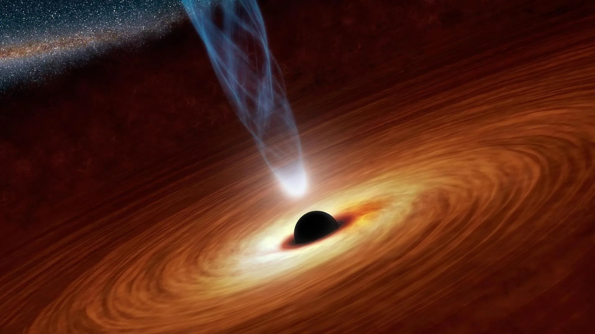
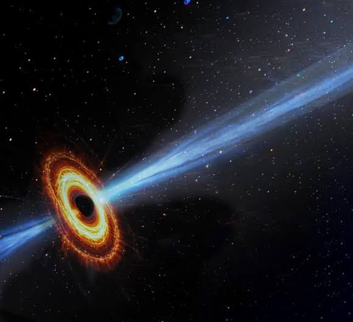
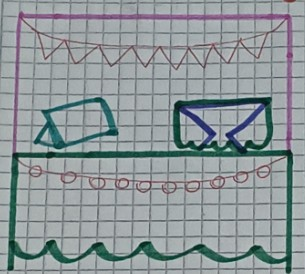

¿Te atreves a mirar más allá del punto del no retorno?
Introducción:
Los agujeros negros supermasivos son algunos de los objetos más extremos y enigmáticos del universo. Se encuentran en el centro de la mayoría de las galaxias y poseen masas que pueden alcanzar millones o incluso miles de millones de veces la masa del Sol. Su enorme gravedad modifica el espacio-tiempo y afecta profundamente el entorno que los rodea.
Comprender estos objetos es fundamental para estudiar la formación y evolución de las galaxias. Su crecimiento y actividad están estrechamente relacionados con los procesos que ocurren en sus regiones centrales, por lo que investigarlos permite conocer mejor la historia del universo y los fenómenos físicos que tienen lugar en condiciones extremas.
En este sitio encontrarás información sobre la naturaleza de los agujeros negros supermasivos, su formación, sus principales características y la manera en que son estudiados por la astronomía moderna. También podrás explorar algunos de los fenómenos asociados a ellos y los interrogantes que aún permanecen abiertos para la ciencia.
Objetivos:
Objetivo general
Analizar las propiedades fundamentales, los mecanismos de formación, y el impacto astrofísico de los agujeros negros super masivos integrando evidencia observacional y un marco teórico de la física moderna para comprender su papel en la evolucion de las galaxias.
Objetivos específicos
Explicar como la gravedad extrema de un agujero negro super masivo curva el espacio-tiempo creando un horizonte de sucesos y la liberación de energía gravitacional del que ni la luz puede escapar.
Describir los procesos físico químicos en los discos de aceleración enfatizando en las temperaturas extremas al rededor del agujero negro super masivo se ioniza y emite radiación, produciendo fenómenos brillantes como los cuásares.
Aplicar modelos matemáticos para cuantificar propiedades clave de los agujeros negros super masivos, como su masa, tamaño caracteristico y la relacion entre estas magnitudes.
Marco teórico:
1. Características principales de los agujeros negros:
Horizonte de sucesos:
Es la superficie límite del agujero negro. Todo lo que cruza este punto queda atrapado para siempre y no puede regresar.
Invisibilidad:
No emiten luz ni radiación propia, por lo que los científicos los detectan al observar cómo afectan el gas, el polvo y las estrellas cercanas

Datos básicos sobre agujeros negros.Figura 1. (González & González, 2025).
2. ¿Cómo se forman?

Figura 2. Del Barco Novillo Universidad de Murcia / Conversation, Ó. (2024, 23 enero). Qué es un agujero negro y por qué es importante que hayan fotografiado el nuestro. EcoAvant.com. https://www.ecoavant.com/ciencia/es-agujero-negro-por-es-importante-hayan-fotografiado-nuestro_12856_102.html
Datos esenciales:
La singularidad:
Es el centro del agujero negro, donde la materia está comprimida en un espacio infinitamente pequeño y las leyes de la física convencional dejan de funcionar.
Espaguetización:
Si te acercaras demasiado a un agujero negro estelar, la fuerza de gravedad extrema estiraría tu cuerpo como un espagueti debido a la diferencia de atracción entre los pies y la cabeza
Misma gravedad:
Si sustituimos el Sol por un agujero negro de la misma masa, el sistema solar se enfriaría mucho, pero los planetas permanecerían en sus órbitas.
Aceleración de particulas:
Los agujeros negros supermasivos que están en el centro de las galaxias pueden lanzar partículas casi a la velocidad de la luz.
Exposiciones estelares:
Hay un tipo de agujero negro que nace cuando una estrella masiva se queda sin combustible y explota como una supernova.La mayoría de las galaxias del tamaño de la Vía Láctea tienen un agujero negro supermasivo en su centro. El nuestro se llama Sagitario A* (se pronuncia A estrella), y tiene cuatro millones de veces la masa del Sol.

Figura 3. NASA. (2026, 11 de junio). Agujeros negros. NASA Ciencia. https://ciencia.nasa.gov/agujerosnegros/
3. Datos y cifras
El más cercano:
El agujero negro conocido más cercano, llamado Gaia BH1, está a unos 1.500 años luz de distancia.
El más lejano:
El agujero negro más lejano que se haya detectado está en el centro de una galaxia llamada QSO J0313-1806, a unos 13.000 millones de años luz de distancia.
El más grande:
El agujero negro más masivo que se haya observado, TON 618, inclina la balanza a 66.000 millones de veces la masa del Sol.
El más pequeño:
El agujero negro más liviano conocido tiene apenas 3,8 veces la masa del Sol. Está emparejado con una estrella.
Rotación:
Todos los agujeros negros giran sobre sí mismos. El más rápido conocido, llamado GRS 1915 105, registra más de 1.000 rotaciones por segundo.

Figura 4. Equipo de redacción de Ciencia. (2024, 10 de mayo). Diez preguntas que podrías tener sobre los agujeros negros. NASA Ciencia. https://ciencia.nasa.gov/universo/diez-preguntas-que-podrias-tener-sobre-los-agujeros-negros/ Simulador de agujeros negros
Instrumento interactivo
Explora cómo cambia el tamaño de un agujero negro
dependiendo de su masa. Desliza el control para
observar sus propiedades.
Masa seleccionada:
1
masas solares
Radio del horizonte de sucesos:
2,95 km
Masa:
1,99 × 10³⁰ kg
Equivalencia en masas solares:
1
¿Qué significa esto?
El horizonte de sucesos es el límite alrededor
del agujero negro a partir del cual ni siquiera
la luz puede escapar. Cuanto mayor es la masa
del agujero negro, mayor es su radio.

Figura 5. Observatorio ALMA. (2025, 25 de marzo). El EHT revela nuevos datos de los chorros procedentes de agujeros negros supermasivos. https://www.almaobservatory.org/es/audiencias/el-eht-revela-nuevos-datos-de-los-chorros-procedentes-de-agujeros-negros-supermasivos/
Nuestro stand durante la presentación del proyecto final
Qué encuentra el visitante.
El experimento físico muestra
El sitio web muestra
Cómo funciona un agujero negro
Como cambia el tamaño de un agujero negro dependiendo de su masa

Figura 4. Propuesta de adecuación del stand. Boceto Stand. Elaboración propia de Danna Aldana (2026)